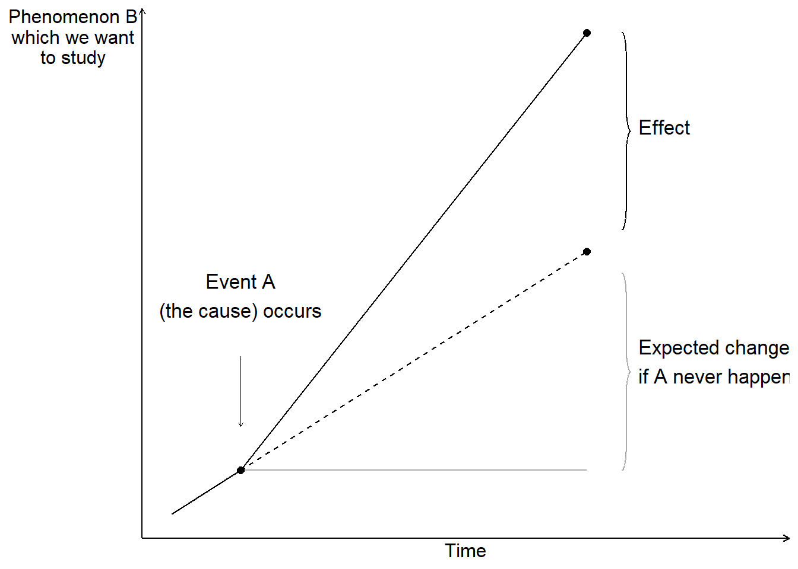
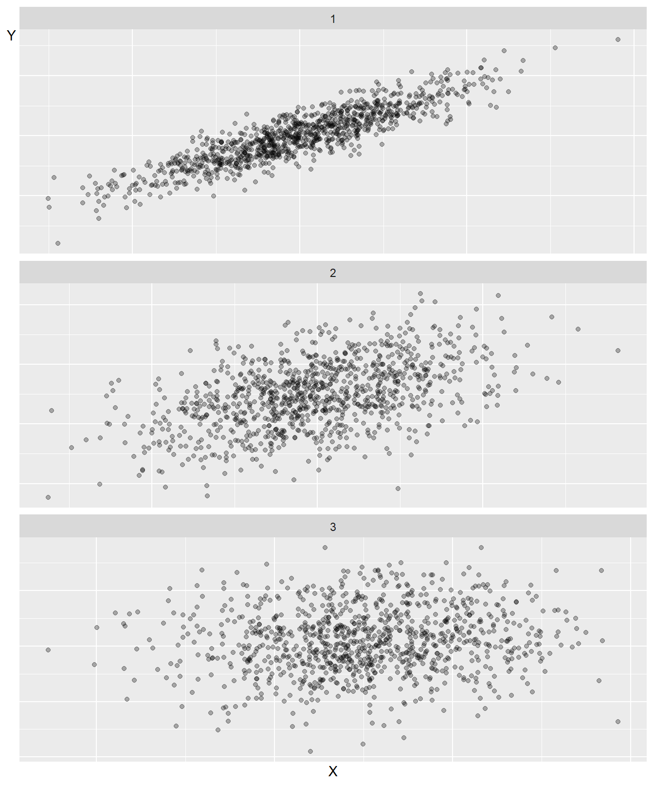
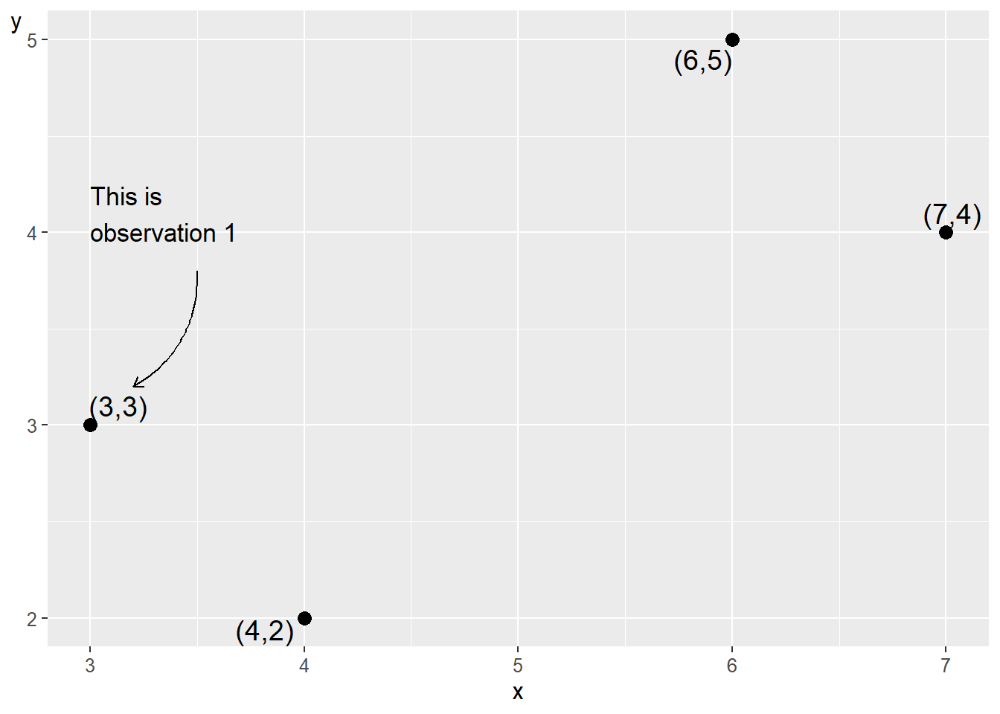

Chapter 20 Causality and Covariation
This chapter introduces the logic of causal analysis: how we reason about causes and effects, what role covariation plays as a necessary condition for causality, and how to measure covariation mathematically.
20.1 Cause and effect
To be able to study causal relationships, we need to compare what happened due to a cause with what would have happened if the cause had never occurred. What did not happen is called the counterfactual outcome, also called potential outcome. The causal relationship entails an effect, which is the difference between the actual outcome and the counterfactual outcome. The cause can be anything that can be thought to affect something else, for example human behavior, environmental change, legislation, a process, and so on.
In our daily lives, we constantly assume different types of causal relationships. We drink water to become less thirsty. We pursue education to learn skills and qualify for new jobs. We take medicine to alleviate illness. Our conviction about many such everyday causal relationships is often based on a similar logic to that used in analytical work and research. By collecting observations (experiencing) in our everyday lives and conducting repeated attempts (every day), we have experience that a lot of our everyday actions entail certain effects.
Figure 20.1 illustrates how cause A occurs at a point in time and affects a phenomenon B, whose development follows the solid line diagonally up to the right in the graph. The change in level since the cause occurred is the distance between the horizontal gray line and the solid black line. A common misunderstanding is that it is sufficient to compare this visible change, the difference between the horizontal gray line and the solid black line. But the effect, the result of cause A, is the difference between the solid line and the dashed line. The dashed line describes how the development would have looked if cause A had never happened, the counterfactual outcome.

Figure 20.1: Counterfactual outcome
By definition, counterfactual outcomes cannot be observed, since this would require us to have access to a parallel universe where the only difference from our universe is that the cause never happened. To study causal relationships, we instead observe a group of observations that have been treated (exposed to cause A) and a group of observations that have not been treated. These groups are called treatment group and control group. Ideally, the only difference between the two groups should be the treatment itself. We interpret the difference between the groups as an effect.
Say we are to study the effect of how a new medicine affects disease symptoms in patients. We have a group of patients who receive medicine and another group that does not receive medicine. We compare how their disease symptoms develop and interpret the difference between the groups as an effect of the medicine. By studying the control group, we hope, ideally, to be able to observe a result that describes the counterfactual outcome, how the symptoms would have developed for the patients who received medicine if they had never received it. It is important that it is precisely groups with several observations. By comparing several observations, we reduce the risk that the patterns we observe are a result of chance, which we will return to later.
If phenomenon A causes phenomenon B, we call A active treatment. We call the alternative scenario control treatment. The control treatment is usually the passive alternative where we do not perform an action, for example not taking a medicine. Often it is clear from the context what is cause and effect, which is why these are usually called treatment and control. For each unit of analysis, it is only possible to study one result. An observation can only be either treatment or control.
Ideally, we want to study how a patient feels after having taken the medicine, compared to how the same patient would have felt if this person had never taken the medicine. If it is a medicine that is to treat a recurring condition, for example headache, it is tempting to try this by asking the same patient to take the medicine one day and refrain from taking the medicine the next time, and compare the difference. But this is not the counterfactual outcome either. The effect of the medicine might vary for one and the same patient over time. The patient might be in better or worse condition at one time point, which affects both the headache and what effect the medicine has. The patient might get used to the medicine, which also affects both the patient’s experience and the effect.
Let us instead imagine that we are to study what effect the government’s new policy (cause) has on the amount of job opportunities (outcome). To analyze this, we would preferably compare the outcome, that is, what has actually happened and we may observe, against how the world would have looked if the government’s policy had never taken place (the counterfactual outcome). This is of course impossible. It is possible observe how the world looked before and after the government’s policy, but these are two separate observations. The situation before is not the counterfactual outcome. Things happen during the time period that can affect how the world looks and we can never be sure what causes the changes we see. We also cannot be sure that the change we observe is a good measure of the policy’s effect, which is what we want to estimate.
Often it is difficult to say exactly what the counterfactual outcome is. If we are interested in the effect of a patient taking a medicine compared to if a patient does not take a medicine, it may sound obvious. But should the patient who does not take the medicine lie completely still during the time or take a walk? Should both patients take a jog or drink and eat something particular?
If we want to study effects of the government’s policy, it usually becomes even more difficult to know what the counterfactual outcome is. What would have happened if the government had not implemented its policy? Would the government have implemented some other policy or resigned? If the policy only concerns a smaller part of society, for example only the companies in one industry, we may sometimes treat the affected industry as treatment group and other industries as control group and compare their developments.
When we divide units of analysis, for example patients, into treatment group and control group, there is a risk that we miss some characteristic that will ultimately affect the results in our analysis. The division into groups must therefore occur in such a way that this division itself does not affect the phenomenon we want to study, such as the disease symptoms.
Often there are phenomena that affect both the distribution between treatment and non-treatment as well as the outcome we want to study the effect on. Say for example that we want to study what effect an education has on students’ future incomes. If we compare the students’ income development with the rest of the population, we risk missing that the students might have some characteristic or prerequisite that would affect their incomes regardless of whether they studied the education or not. This characteristic also affects the students’ decision to study the education. Even without the education, the students would therefore have had higher incomes compared to people who did not study the education (compare figure 20.1 ). This means in that case that a simple comparison of the students’ incomes with the rest of the population overestimates the effects of the education.
A method that is often described as the ideal for distributing units of analysis into control and treatment groups is chance (randomization). The idea behind this is that units of analysis have known and unknown characteristics that can affect our analysis. By distributing the units of analysis randomly, these characteristics, if we have sufficiently many observations, will not have any systematic impact on the analysis results. Using this method is called conducting a randomized controlled trial.
Randomized studies often require a large amount of observations and therefore risk becoming costly and complicated. If we for example want to study the effects of an education, one method could be that we select a group of people randomly in the population and let half of these study the education. The part of the group that gets to study the education becomes our treatment group and the rest becomes our control group. Since the participants know that they are participating in an experiment, this can in itself affect the results. The participants might behave in some other way than people who would study the education voluntarily. Letting a large amount of people study an education for free as an experiment with unclear results can become both costly and demanding.
20.2 Variation, Covariation and Association
Suppose we are to study how phenomenon A affects phenomenon B, which we do with the help of a treatment and control group. To be sure that A causes B, we first want to isolate a variation in A that is created externally and is not created by, for example, phenomenon B. This is called observing an exogenous variation in A.
Thereafter we examine whether we find any form of covariation. If phenomenon A on average increases at the same time as phenomenon B on average increases, and decreases at the same time as B decreases, then there is a positive covariation between A and B. If phenomenon A increases at the same time as B decreases and A decreases while B increases, then there is a negative covariation between A and B. Compare positive and negative slope in graphs that we introduced in chapter 4 .
Covariation is a necessary condition for us to be able to claim that there is a causal relationship between two phenomena. Say for example that we study what effect a medicine has on patients’ disease symptoms. We control when the patients take the medicine (exogenous variation) and then observe the disease symptoms. We examine whether there is a covariation between use of the medicine and disease symptoms.
Covariation is a condition for us to be able to claim that we have found a causal relationship. It is also a requirement for us to be able to measure an effect (the difference between the treatment and control groups). However, covariation is no proof of a causal relationship. Suppose we observe that neighborhoods with more police patrols tend to have higher crime rates. A simple interpretation might suggest that police cause crime. However, the more likely explanation is that police are deployed to areas with existing crime problems - the causation runs in the opposite direction.
Consider another example. Students who receive tutoring often perform worse on standardized tests than students who don’t receive tutoring. Does this mean tutoring hurts academic performance? More likely, students who struggle academically are more likely to seek tutoring in the first place. The tutoring might actually improve their performance compared to what it would have been without help, but not enough to surpass students who never needed extra assistance.
These examples illustrate why establishing causation requires careful analysis beyond simply observing covariation. We must consider alternative explanations: reverse causation (B causes A instead of A causing B), confounding variables (C causes both A and B), or selection effects (certain types of units are more likely to experience the treatment). Even when we find strong covariation, multiple causal stories may be consistent with the same pattern of data.
20.3 Observational Study and Experiment
When we study covariation, it is common to distinguish between observational studies and experiments. In an observational study, we study collected data, for example from a survey or information collected by others. In an experiment, we arrange collection of data to be able to study cause and effect, for example by randomly distributing units of analysis between treatment and control groups. In both observational studies and experiments, we study covariation.
Effects are often mixed up with other phenomena that we also want information about. Say for example that we send out a survey to students who have studied a course and ask if they have had use of the course. Everyone answers yes, which means that the students are satisfied. This is admittedly fun to know but it is not the same thing as the education’s effect on the students’ lives, since we do not have a counterfactual outcome, or a control group, to compare against.
In section 5.10 we compared GDP and happiness in the world’s countries and showed a positive covariation, where inhabitants in countries with higher GDP are more satisfied with their lives. This is an example of an observational study. The covariation does not necessarily show how large an effect an income increase would have on happiness. People in rich countries have on average many advantages compared to inhabitants in poor countries that can be thought to affect both happiness and wealth.
To estimate an effect, we need to control for all other phenomena that can affect the covariation. Full-scale controlled experiments are in many cases unethical and impossible within social science. Say for example that we want to study the relationship between income and happiness. We decide to randomly assign a large group of people into treatment and control groups. The treatment group gets lots of money while the control group gets to live their entire lives in poverty. Even if we were to disregard the ethical aspects, the participants’ behavior and experiences will probably be affected by the knowledge that they are participating in an experiment. The results therefore become meaningless regardless of how we go about it.
Due to the difficulties of using experiments, social science is largely instead referred to what is called quasi-experiments, or natural experiments. Quasi-experiments refer to analyses where the division into treatment and control groups is identified by the analyst afterwards. Often this happens by the analyst finding some mechanism that has led to a more or less unintentional random division into treatment and control groups.
Say for example that the government enacts a new law that is to be implemented in all the country’s municipalities. Due to some typographical error in a document, the law is delayed by one year for some of the municipalities. We use this to study effects of the new law (the treatment). We have by chance gotten two groups of municipalities: a group where the law takes effect the first year (the treatment group) and another group with municipalities where the law takes effect one year later (the control group).
A well-known historical example of a quasi-experiment was the cholera outbreak that occurred in London in 1854. The physician John Snow noted that mortality in cholera seemed to be connected with the use of dirty water from the River Thames. By studying variations in mortality and water use between different parts of London and over time, Snow argued that the dirty water caused increased mortality among the population. The water use was not designed by any analyst and the inhabitants of London were not randomly divided into treatment and control groups. But since the use of water with different dirtiness was randomly distributed in London, Snow could utilize this to study whether water consumption caused diseases.
We return to these questions in chapter 27 where we introduce some methods for quasi-experimental observational studies.
20.4 Covariation: Mathematical Measures
Having established that covariation is a necessary condition for causality, we now introduce mathematical tools for measuring it.
20.5 Covariation in graphs
In section 20.2 we introduced the concept of covariation and went through how positive covariation means that low values for one variable X on average are associated with low values for another variable Y, and that high values on average are associated with high values. Negative covariation means that high values in one variable X are associated with low values in the other variable Y and low values in X are associated with high values in Y.
One way to study covariation is to illustrate the information we are interested in in graphs. But graphs rarely go particularly far. Here follows an attempt to illustrate these things. Figure 20.2 illustrates three examples that describe covariation between the two variables X and Y. Each graph shows its own collection of observations, where each dot represents an observation with a value for X and Y respectively. In the uppermost graph, no. 1, we see a clear positive covariation. The dots lie almost on a straight line up toward the right in the graph. In the graph we may relatively easily read how much variable Y changes on average when X increases by one unit, in the same way as when we introduced linear functions and graphs in chapter 4 .
In graph no. 2 we can still describe the placement of the dots roughly as along a line up toward the upper right corner. But the dots are more spread out, which makes it a bit harder to say with certainty exactly how much Y changes on average when we go from low to high values on X. It therefore requires a more detailed analysis with the help of calculations if we want to know something more exact about the relationship between the variables.
In the third graph at the bottom it is more uncertain whether we have any meaningful relationship between the variables at all. The dots are spread out as in a large cloud. But even in this graph there is a positive covariation between X and Y, which the author knows since the graph’s data is created with the help of the computer.
As a rule, it is required that we calculate covariations more carefully in order for us to be completely sure whether the variables can be assumed to covary or not, and how large this covariation is.

Figure 20.2: Three examples of covariation
20.6 Covariation 1: Covariance
Now we shall introduce our first statistical measure of linear covariation: covariance. Covariance is a measure of covariation between two variables, for example \(x\) and \(y\). For population data:
\[ \begin{equation} cov(x,y)=\frac{1}{n}\sum_{i}^{n}(x_{i}-\bar{x})(y_{i}-\bar{y}) \end{equation} \]
Our goal is to estimate the covariation in a population and possibly a superpopulation. From our population we take a sample of observations that we use to estimate the covariation.
In previous examples we have worked with populations for one variable. Since we are now interested in covariation, our population consists of two variables. The covariance between \(x\) and \(y\) in a population is denoted \(\sigma_{xy}\)(compare the notation for the population’s variance \(\sigma_{x}\)). Positive covariance means positive covariation: higher values of \(x\) are associated with higher values of \(y\). Negative covariance means negative covariation, that higher values of \(x\) are associated with smaller values of \(y\) and vice versa. It does not matter in which order we write the variables in the parentheses: \(\text{cov}\left(x,y\right)=\text{cov}\left(y,x\right)\). If we take the covariance for \(x\) and the same variable \(x\), we get the variance of \(x\):
\[ \begin{align} \text{cov}\left(x,x\right) & =\left(\frac{1}{n}\right)\sum_{i}^{n}\left(x_{i}-\bar{x}\right)\left(x_{i}-\bar{x}\right)\\ & =\left(\frac{1}{n}\right)\sum_{i}^{n}\left(x_{i}-\bar{x}\right)^{2}\nonumber \\ & =\text{var}\left(x\right)\nonumber \end{align} \]
We can also apply Bessel’s correction here to reduce the underestimation of the spread in the population that we risk making. This gives us what is called sample covariance:
\[ \begin{equation} \textbf{Sample covariance: }\text{cov}\left(x,y\right)=\left(\frac{1}{n-1}\right)\sum_{i}\left(x_{i}-\bar{x}\right)\left(y_{i}-\bar{y}\right) \tag{20.1} \end{equation} \]

Figure 20.3: Four observations for \(x\) and \(y\)
| Observation | \(x_{i}\) | \(y_{i}\) | \(x_{i}-\bar{x}\) | \(y_{i}-\bar{y}\) | \(\left(x_{i}-\bar{x}\right)\left(y_{i}-\bar{y}\right)\) |
|---|---|---|---|---|---|
| 1 | 3 | 3 | \(-2\) | \(-0.5\) | 1 |
| 2 | 4 | 2 | \(-1\) | \(-1.5\) | 1.5 |
| 3 | 6 | 5 | 1 | 1.5 | 1.5 |
| 4 | 7 | 4 | 2 | 0.5 | 1 |
| Mean | 5 | 3.5 | |||
| Sum | 5 |
Let us estimate the covariance between variables x and y that we used in the previous section. Figure 20.3 describes our four observations in a table to the left and a graph to the right. In the table we have one observation per row and one variable per column. In the graph each observation is represented by a point. The point furthest to the left is observation 1: \(\left(x,y\right)=\left(3,3\right)\). The point furthest to the right is observation 4: \(\left(x,y\right)=\left(7,4\right)\). Row 1 in the table consists of the first value for x and y respectively and represents values that belong together in some way. If we work with observed data, collected information, each observation represents an observation unit, for example information about a person or perhaps a country. Our four observations could thus represent four people, four countries or something else. In table 20.1 we have calculated the parts we need to get the covariance between x and y (equation (20.1) ):
\[ \begin{align} \text{cov}\left(x,y\right) & =\left(\frac{1}{n-1}\right)\sum_{i}\left(x_{i}-\bar{x}\right)\left(y_{i}-\bar{y}\right)=\left(\frac{1}{3}\right)\times5=\frac{5}{3} \tag{20.2} \end{align} \]
We find that \(\text{cov}\left(x,y\right)=\frac{5}{3}\). This positive value indicates positive covariation. Covariance is useful for getting an estimate of whether the covariation between two variables is positive or negative, but it is difficult to say much more than that. There are no limitations for which values covariance can take. The value of covariance depends on which unit the variables’ values have. For example, we will get different results depending on whether we use a variable that describes income in USD or in thousands of USD.
20.7 Covariation 2: The correlation coefficient
Another measure of linear covariation is Pearson’s \(r\), also called Pearson’s correlation coefficient or the correlation coefficient. The correlation coefficient for variables \(x\) and \(y\) is denoted for population \(\rho_{xy}\)(Greek rho):
\[ \begin{align} \textbf{Correlation coefficient: }\rho_{xy} & =\frac{\sigma_{xy}}{\sigma_{x}\sigma_{y}} \tag{20.3} \end{align} \]
where \(\sigma_{xy}\) is the covariance between \(x\) and \(y\) in the population, and \(\sigma_{x}\) and \(\sigma_{y}\) are standard deviation in the population for each respective variable.
Another way to describe this is that the correlation coefficient is standardized covariance (compare section 15.8 ). The correlation coefficient can only take values between \(-1\) and 1, where \(-1\) means perfect negative correlation and 1 means perfect positive correlation. If the correlation coefficient equals 0, this indicates that there is no linear covariation between the variables. Since all results for the correlation coefficient are within the interval \(\left[-1,1\right]\), different correlation coefficients are comparable.
If we work with sample data, the correlation coefficient is denoted \(r_{xy}\) or \(corr\left(x,y\right)\):
\[ \begin{equation} r_{xy}=\frac{\text{cov}\left(x,y\right)}{s_{x}s_{y}} \end{equation} \]
where we instead have estimated covariance in the numerator and estimated standard deviation for the two variables in the denominator. The different parts in this equation we have defined earlier in this chapter. We write out the equations and add Bessel’s correction:
\[ \begin{equation} \begin{aligned} r_{xy} & =\frac{\text{cov}\left(x,y\right)}{s_{x}s_{y}}\\ & =\frac{\left(\frac{1}{n-1}\right)\sum_{i}^{n}\left(x_{i}-\bar{x}\right)\left(y_{i}-\bar{y}\right)}{\left(\frac{\sum_{i}^{n}\left(x_{i}-\bar{x}\right)^{2}}{n-1}\right)^{1/2}\left(\frac{\sum_{i}^{n}\left(y_{i}-\bar{y}\right)^{2}}{n-1}\right)^{1/2}}\\ & =\frac{\left(n-1\right)^{-1}\sum_{i}^{n}\left(x_{i}-\bar{x}\right)\left(y_{i}-\bar{y}\right)}{\left(n-1\right)^{-1}\left(\sum_{i}^{n}\left(x_{i}-\bar{x}\right)^{2}\right)^{1/2}\left(\sum_{i}^{n}\left(y_{i}-\bar{y}\right)^{2}\right)^{1/2}}\\ & =\frac{\sum_{i}^{n}\left(x_{i}-\bar{x}\right)\left(y_{i}-\bar{y}\right)}{\left(\sum_{i}^{n}\left(x_{i}-\bar{x}\right)^{2}\right)^{1/2}\left(\sum_{i}^{n}\left(y_{i}-\bar{y}\right)^{2}\right)^{1/2}} \end{aligned} \tag{20.4} \end{equation} \]
Since Bessel’s correction is included in all three measures, we cancel \(\left(n-1\right)^{-1}\) from both numerator and denominator in the last row. Let us again demonstrate by estimating \(r_{xy}\) for the two variables \(x\) and \(y\) and their four observations from figure 20.3 . We reuse the results for covariance (equation (20.2) ) and standard deviation for \(x\) and \(y\)(equation (15.6) ):
\[ \begin{align} r_{xy} & =\frac{\text{cov}\left(x,y\right)}{s_{x}s_{y}}\approx\frac{5/3}{\left(+\sqrt{\frac{10}{3}}\right)\left(+\sqrt{\frac{5}{3}}\right)}\approx0.71 \tag{20.5} \end{align} \]
This result indicates a positive correlation. High values of \(x\) coincide with high values of \(y\) and low values of \(x\) coincide with low values of \(y\). Different correlation coefficients can be compared but it is still difficult to interpret this type of result more precisely.
20.8 Chapter summary
Frequency distribution shows number of observations per value or interval and can be reported in for example a table or a graph. A special type of bar graph that is often used in these cases is histogram, which shows frequencies per interval. In statistics, different measures of dispersion are used to measure distribution of values in a variable.
Variance in the population for variable \(x\): \(\sigma_{x}\). Estimated variance with sample data for the same variable \(x\): \(\hat{\sigma_{x}}=\text{var}\left(x\right)=\frac{1}{n}\sum\left(x_{i}-\bar{x}\right)^{2}\) where \(n\) is number of observations, \(x_{i}\) is observation i of variable \(x\) and \(\bar{x}\) is mean.
Standard deviation for variable \(x\): \(+\sqrt{\sigma_{x}}\). For sample data: \(\hat{\sigma}_{x}=s_{x}=+\left(var\right)^{1/2}=\left(\frac{\sum\left(x_{i}-\bar{x}\right)}{n}\right)^{1/2}\).
Bessel’s correction means that we divide by \(n-1\) instead of \(n\). This reduces the error that risks arising when we use sample data to estimate measures of dispersion for a population. Bessel’s correction can also be used for other measures.
Standardized value, also called z-value or z-score, indicates a value’s difference with the mean divided by standard deviation. For variable x this can be calculated \(z_{x}=\frac{x_{i}-\bar{x}}{s_{x}}\). Normalized values for variable \(x\) are given by \(x_{norm}=\frac{x_{i}-x_{min}}{x_{max}-x_{min}}\).
Covariance is a measure of linear covariation between two variables. For the population for \(x\) and \(y\): \(\sigma_{xy}\). Estimated with sample data: \(\hat{\sigma}_{xy}=\text{cov}\left(x,y\right)=\frac{1}{n}\sum\left(x_{i}-\bar{x}\right)\left(y_{i}-\bar{y}\right)\).
The correlation coefficient (Pearson’s r) for population: \(\rho_{xy}=\frac{\text{cov}\left(x,y\right)}{s_{x}s_{y}}\). Sample data: \(r_{xy}=\sum\left(\frac{x_{i}-\bar{x}}{s_{x}}\right)\left(\frac{y_{i}-\bar{y}}{s_{y}}\right)\) where \(s_{x}\) is standard deviation for variable \(x\).